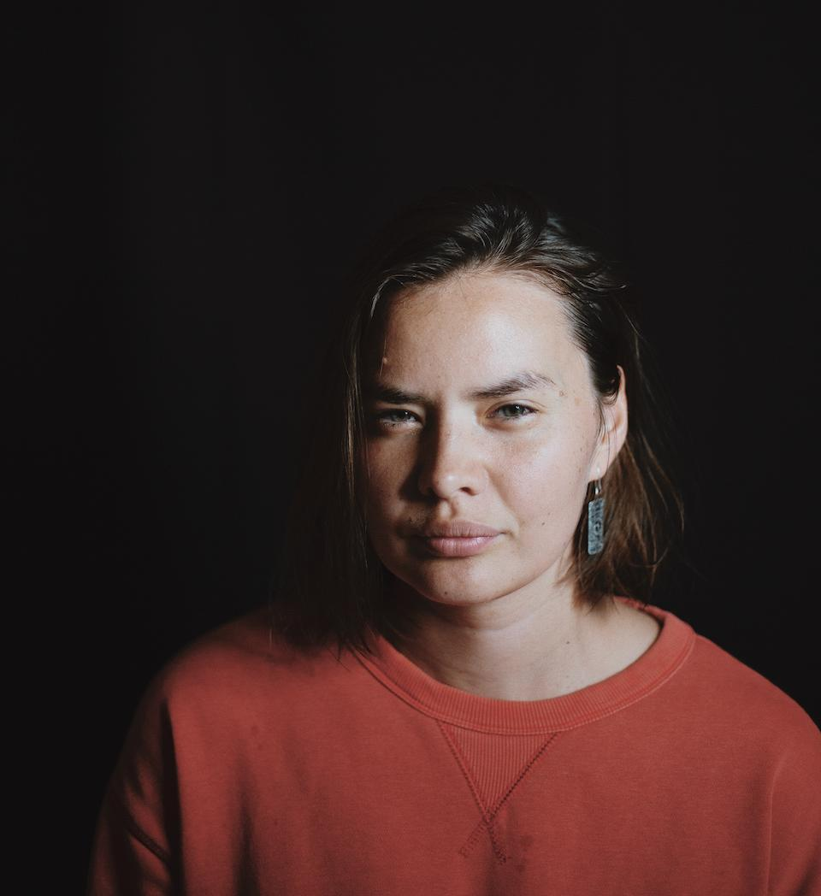
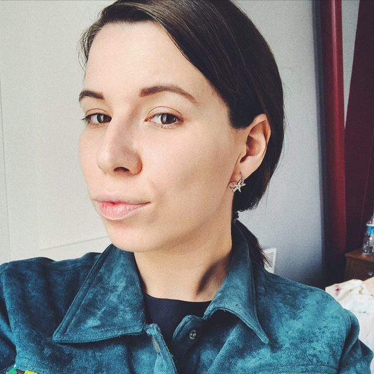

Обо мне
Фасилитаторка и модераторка, исследовательница социальных процессов и коллективных практик, авторка текстов на социальные темы, экспертка по работе с сообществами и в сфере защиты прав женщин и квир-людей, продюсерка социальных проектов.
Принципы
На что я опираюсь
Уважительное любопытство
Верю, что искренний интерес к историям, опыту и перспективам других людей открывает путь к взаимопониманию, созданию новых смыслов и поддерживающему диалогу.
Образование как инструмент изменений
Верю, что через обучение, совместное исследование и рефлексию мы можем менять общественные структуры, преодолевать несправедливость и воплощать более чуткую к разнообразию и устойчивую реальность.
Сила коллективности и солидарности
Верю, что объединение людей вокруг общих целей и забота друг о друге укрепляют нас и делают возможными устойчивые изменения.
Чувствительность к дисбалансу власти и контексту дискриминации
Я стараюсь видеть и анализировать, как власть и дискриминация влияют на взаимодействие людей и их решения, чтобы действовать осознанно и учитывать эти факторы в своих подходах.
Коммуникация против насилия
Я верю, что изменение подходов к коммуникации, от повседневных разговоров до общественных дискуссий, способно снижать уровень насилия, уменьшать его последствия, создавать пространство для понимания и предотвращать эскалацию конфликтов, вплоть до войн.
Комическое как пространство жизни
Я верю, что серьезность часто стремится к подавлению и нормализации, тогда как комическое раскрывает неочевидные аспекты реальности, позволяет преодолеть страхи и ограничивающие структуры. Юмор освобождает от тяжести навязанных норм и создает пространство для подлинной жизни, свободной, спонтанной и творческой.
Практика
Опыт работы в некоммерческом секторе
- 2020–2022
No Flowers
Первый феминистский благотворительный офлайн-фестиваль во Владимире. Создательница проекта, занималась программным и организационным продюсированием, налаживанием партнерств.
- 2023 — сейчас
Cheers Queers
Крупнейшее русскоязычное лесбийское сообщество. Соосновательница и стратегическая лидерка проекта. Отвечаю за развитие сообщества, образовательное направление, финансовую устойчивость, проектирование коллективных процессов и стратегическое развитие инициативы.
- 2023–2025
Лабиринт
Проект поддержки русскоязычных женщин, столкнувшихся с насилием в эмиграции. Руководила развитием проекта, стратегическим планированием и организацией работы команды.
- 2024–2025
Насилию.нет
Одна из крупнейших российских организаций, работающих с проблемой домашнего насилия. Занималась развитием волонтерского направления, проектированием образовательных программ и фасилитацией внутренних командных процессов, входила в Совет директоров фонда.
- 2025 — сейчас
Лес рук
Закрытая образовательная медиаплатформа о сапфической культуре, идентичности, сексуальности и политике для русскоязычной аудитории. Соосновательница и авторка проекта. Отвечаю за концепцию платформы, финансовую устойчивость, развитие сети партнеров и создание авторских аналитических и просветительских текстов.
- 2026
Kollontai.project
Просветительский двуязычный медиапроект с феминистской оптикой. Редакторка и авторка. Отвечала за редакционный процесс, писала материалы и фасилитировала стратегические обсуждения команды.
Отзывы
Что коллеги говорят о моей работе

Дарья Серенкокоординаторка ФАС
Фасилитационная работа Тани пришлась на очень сложное время в нашей организации, мы были в глубоком кризисе. Перед нами стояла задача не просто пройти через стратсессию, а сделать это реалистично, соотносясь с нашими небольшими силами и мощным выгоранием. Стратегический план, который мы бы не смогли потом вытянуть в реальности, мог бы нас добить окончательно. Татьяна с вниманием и чуткостью подошла к нашему состоянию. Стратегическая сессия не фрустрировала нас, не оставила наедине с собственным бессилием, а была по итогу точкой перезапуска нашего движения.
Таня для меня образец профессионалки в секторе. На время стратсессии она была для нас фигурой эмоционально-доступного надежного взрослого человека, на которого можно было опереться и который способен выдержать любые наши эмоции и любую нашу неорганизованность. После стратсессии Таня всегда была в доступе и сопровождала нас. Стратсессия оказала не только организационный эффект, но и терапевтический, стало легче взаимодействовать в коллективе, легче договариваться в некоторых аспектах и легче планировать будущее. Мы очень благодарны.

Библиотека им. Дж. ОруэллаИваново, Россия
В начале нашего взаимодействия библиотека находилась в состоянии глубокого кризиса. Оставшись без формального лидера и финансовой поддержки, мы столкнулись с реальной угрозой закрытия. Не было средств на оплату аренды, отсутствовало понимание, как выстраивать работу в новых условиях, а общим настроением команды были растерянность и опускающиеся руки.
В работе Татьяны для нас наиболее ценным стало сочетание мягкой настойчивости и четкой системности. В ситуации, когда мы были перегружены эмоциями и текущими проблемами, ее подход позволил нам не терять фокус. Сессии проходили в безопасной поддерживающей атмосфере, и это позволило нам открыто говорить об актуальных страхах и барьерах. Татьяна как наставница направляла нас так бережно, что мы сами, как будто незаметно для себя, обнаружили свои сильные стороны и скрытые преимущества.
Благодаря циклу онлайн-встреч, формат которых оказался на удивление продуктивным, нам удалось совершить качественный переход от растерянности к структуре, ушло чувство беспомощности. Теперь у нас есть четкий план работы на год. Мы перестали быть просто группой людей и стали сплоченным коллективом с понятным распределением ролей и зон ответственности. Татьяна чуткая профессионалка и фасилитаторка, которая помогла нам обрести твердую почву под ногами и найти новые горизонты. Спасибо!
Анна Ривинакандидатка юридических наук, основательница Насилию.нет
Таня соединяет в себе качества, которые очень редко встречаются вместе. Глубокое понимание феминистской и правозащитной повестки, системность мышления и умение превращать идеи в работающие профессиональные решения. Для меня её сильная сторона в том, что она умеет глубоко анализировать проблему, увидеть её в широком контексте и при этом очень внимательно относиться ко всем участникам процесса, и к команде, и к людям, для которых создается проект или программа.
Я бы особенно рекомендовала Таню для задач, где нужно соединить стратегическое видение, бережный подход и практическую реализацию, от концепции и анализа до выбора конкретных инструментов и запуска решений. Работать с Таней большая удача.

Надежда Юроваведущая ютуб-канала Новой газеты Европа
Профессиональная сила Тани, на мой взгляд, в глубокой теоретической экспертизе. Меня всегда восхищает её теоретическая и исследовательская база и умение интегрировать её в реальную жизнь, делая не сухой, а по-настоящему прикладной и видимой. Наш общий текст про лесбосепаратизм до сих пор считаю великим примером именно этого.
Отдельно ценю то, как Таня работает с людьми в разговоре. Она задаёт очень точные вопросы, которые помогают раскрыть человека, его эмоции и переживания, рассказать свою историю через чувства, а не через последовательность событий. Таня бережна с точки зрения этики. Я знаю, что могу целиком доверить ей тему, где нужен особый подход к человеку со сложной жизненной историей, и это будет сделано очень аккуратно.
Я прихожу и буду приходить к Тане за тем, чтобы эмпатично говорить с людьми и глубоко копать в самые разные явления, без страха, что будет скучно.

Анастасия Полозковажурналистка, редакторка и фем-активистка
Таня супер ответственный, креативный человек и отличная специалистка. Мы работали вместе в помогающей организации, а потом над материалом для «После.Медиа» о положении лесбиянок в России. Таня подготовила очень качественный и вдумчивый материал. Её подход выделяет человечность, живость и энтузиазм. Кажется, у Тани столько энергии, что хочется попросить поделиться.
Помимо профессиональных навыков, её очень выделяют и человеческие качества, работать вместе комфортно, любая задача превращается в приятный процесс. Особенно ценным в нашей работе считаю сочетание мощной аналитики с добрым, человеческим подходом.

Виктория Вяхоревакоммуникации и фандрайзинг в НКО
Некоммерческая организация, в которой я работала и для создания стратегии которой мы позвали Таню, была по-настоящему тяжелым случаем. Распределенная команда людей, живущих в 7 разных странах, больше половины сотрудников никогда не виделись лично и вообще имели мало общего, не было опыта оформленной стратегии, ни программной, ни маркетинговой, ни фандрайзинговой, хаос царил примерно во всех направлениях.
Мне очень понравилось, как Тане удалось не поддаваться общему пессимистичному направлению, выстроить коммуникацию буквально со всеми стейкхолдерами внутри компании, даже теми, кто был очень скептически настроен, вовлечь в процесс создания стратегии всю команду, подчеркнуть важность каждой сотрудницы и закрепить ответственность за каждой. У нас получилось довести стратегию до конца, и хотя это не помогло организации продолжить существование, это была самая эффективная фасилитационная работа, которую я видела за последние 8 лет.

Лена Закировакоординатор программ в digital и social impact
Профессиональная сила Тани, на мой взгляд, в умении собирать сложные, разнородные задачи в понятную систему. Она видит и людей, и процессы, и цели проекта и умеет связывать всё это между собой, при этом сохранив внимательность к участницам и контексту. Мне очень нравится сочетание гибкости и структурности, Таня хорошо держит рамку проектов и одновременно умеет адаптироваться к ограничениям и быстро реагировать на изменения.
Я бы рекомендовала обратиться к Тане за фасилитацией процессов или консультацией по коммуникации, особенно если нужно запустить сложное сообщество, навести порядок в процессах, выстроить работу в команде или связать продуктовую логику с реальными потребностями. Татьяна просто потрясающая, и я мечтаю поработать с ней снова!

Елена Филипповаиздатель Perito, основательница книжного клуба «После Слов»
Мы запускали книжный клуб при Perito и с самого начала понимали, что это не просто развлекательный формат. Нам была нужна помощь в выстраивании системы коммуникации внутри клуба: как вести обсуждения, как модерировать разговор, как создавать безопасную атмосферу — и при этом сохранять пространство для живого, честного высказывания.
Таня помогла нам иначе посмотреть на задачу: вместо строгих правил — коммуникационная рамка, достаточно понятная, чтобы на неё опереться, и достаточно уважительная, чтобы не разрушать доверие к аудитории. При этом работа не оставалась на уровне общих рассуждений — Таня давала конкретные инструменты: как начинать обсуждение, как задавать тон, как учитывать групповую динамику.
Самым ценным оказалось сочетание профессиональной точности и человеческого уважения. Это редкое сочетание.

Александра ДжорджевичPR-специалистка для impact-бизнеса и НКО
Перед нами стояла задача сформировать предварительную стратегию развития международного благотворительного фонда и разработать конкретные действия по разным направлениям его работы. В первую очередь нужно было структурировать накопленные знания о работе внутри организации.
У меня были предубеждения насчёт фасилитации, так как до этого я участвовала в стратегической сессии только один раз, и мне не очень понравилось, потому что никакого конкретного результата на выходе не было. Здесь особенно ценным оказалось то, что по итогам сессии у нас получился конкретный документ. Он был структурированным, отражал абсолютно всё, что мы обсуждали, ничего не было искажено. Как в игре в испорченный телефон, только наоборот.
В результате появилось понимание, сложилась структура в голове, были прописаны роли и возник фундамент для дальнейшей работы. И отдельно ценно то, что это не было коллективным брейнштормом в привычном смысле. Мы обсуждали, но происходящее больше напоминало настоящую работу, чем игру.
Если вы хотите обсудить сотрудничество
Напишите мне о вашей задаче, контексте и текущем запросе. На основе этого я предложу возможный формат работы или честно скажу, если увижу, что вам может подойти другой тип экспертизы.